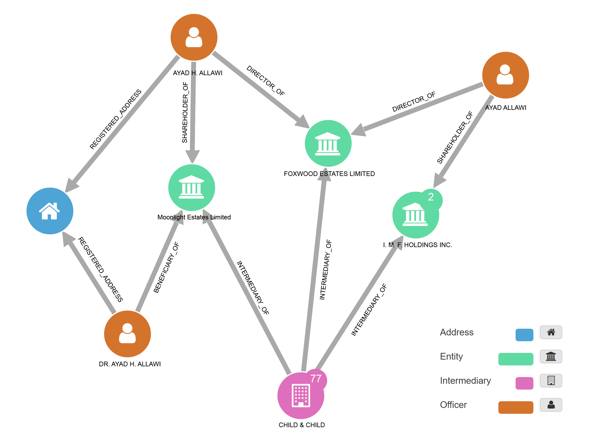
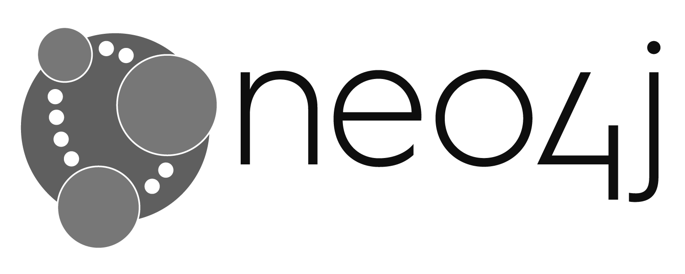

To get started, you can try looking for Pedro Delgado - former President of the Central Bank of Ecuador - or Petro Poroshenko - President of Ukraine - or Jérôme Cahuzac - former government Minister in France.
Powered by:

The data is a copy of ICIJ's offshore leaks database. It's a graph of almost 500,000 offshore companies, foundations and trusts from the Panama Papers, the Offshore Leaks and the Bahamas Leaks investigations. It also includes some of the offshore financial data from politicians featured in the Paradise Papers investigation.
Please note that the database does not contain any text documents, photos or PDFs. Paradise Papers data will be added once published by ICIJ.
For more information on how to use Linkurious Enterprise, please refer to the documentation.